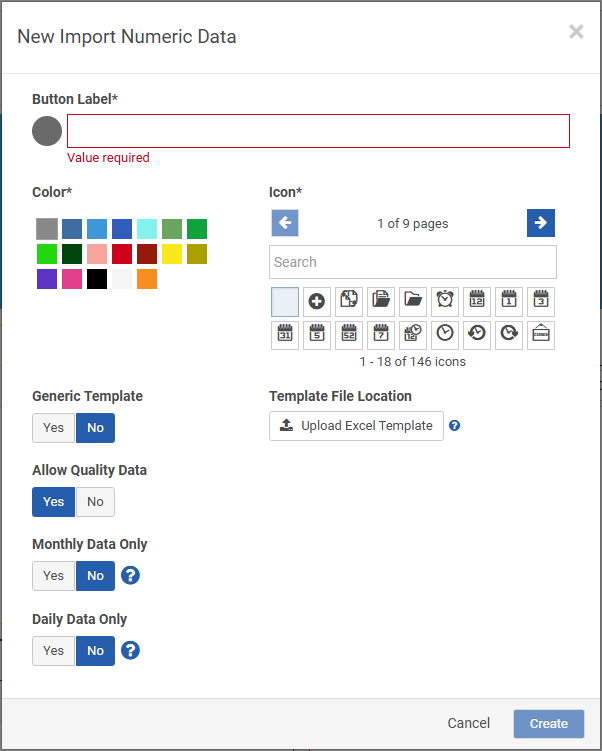

Import Numeric Data header buttons allow users to import bulk numeric data from a spreadsheet. See Bulk Import Numeric Data for more information.
To guide users, you can add instructions in text boxes on the portal page and add tooltips to template cells.
To configure a bulk import button:
Click Add Page Button or Add Header Button and select Import Numeric Data.

Enter the Button Label and select the Color for the button and optionally an Icon to appear before the label.
Generic Template:
If users will be providing their own template, select Yes.
If you will be providing users with a data-stream-specific import template, select No and then click in the Template File Location field to upload the template. Once it has finished uploading, click Done.
Allow Quality Data: Select Yes if the import can include any additional data quality fields along with the numeric data points.
Monthly Data Only / Daily Data Only: If you want to enforce that each data point uses a specific time, select Yes next to Monthly Data Only (or Daily Data Only,as applicable), then enter the Time to be applied to each imported data point.
If Monthly Data and Daily Data are both set to No, then the end user must supply both date and time.
Click Save.
To guide users, you can add instructions in text boxes on the portal page as well as add tooltips to template cells.
Template Tips
Templates can be in xls, xlsx, xlsm, or csv format.
Templates must have the columns in the following order, with the UOM column optional:
Date: If Monthly Data Only or Daily Data Only are set to Yes, the Date column in the template should use short date format and not include the time; for monthly data, the dates captured in the imported spreadsheet must be set to the last day of the month or the entry will be rejected. If Monthly Data Only and Daily Data Only are both set to No, then the Date column in the template must include both date and time.
Tag: This can either be the GUID for the parameter, the unique tag for the parameter, or the path.
Value: The value to enter.
To make changes, you can re-import and any changed values will overwrite any previous values imported for the same date/time/tag data point. If you want to delete a previous value entirely, you must enter <clear> in the Value field. Simply deleting the value will be ignored and the previous value will remain.
UOM: This column will populate the Unit of Measure field for parameters that have the automated unit of measure conversion settings. This column is optional. Files can be processed with or without it.
Collector: Optional field.
Templates can include additional columns, e.g. to capture quality data. These must match the custom field names in the parameter header, and will be ignored unless Allow Quality Data is set to Yes in the import button settings.
Templates can have multiple worksheet tabs but only the one named "Data Import" will be imported. The Data Import tab can contain formulas or macros but only the results are imported.
Sample Layout
Below is a sample layout with buttons for monthly and daily data imports: